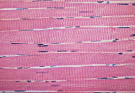
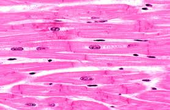

Comparing Muscle Types
A side-by-side look at the structure and key features of skeletal, cardiac, and smooth muscle.

Skeletal Muscle
- Structure: Striated, long fibers, multinucleated
- Control: Voluntary
- Location: Attached to bones
- Function: Movement, posture

Cardiac Muscle
- Structure: Striated, branched cells, intercalated discs
- Control: Involuntary
- Location: Heart wall
- Function: Pumping blood
Smooth Muscle
- Structure: Non-striated, spindle-shaped cells
- Control: Involuntary
- Location: Walls of organs/vessels
- Function: Internal movement